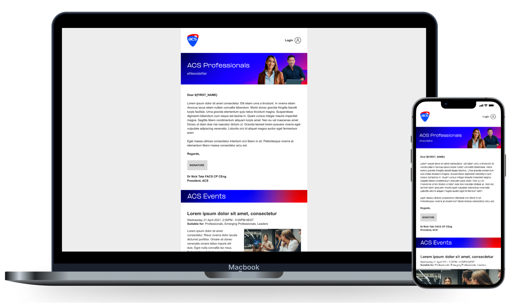
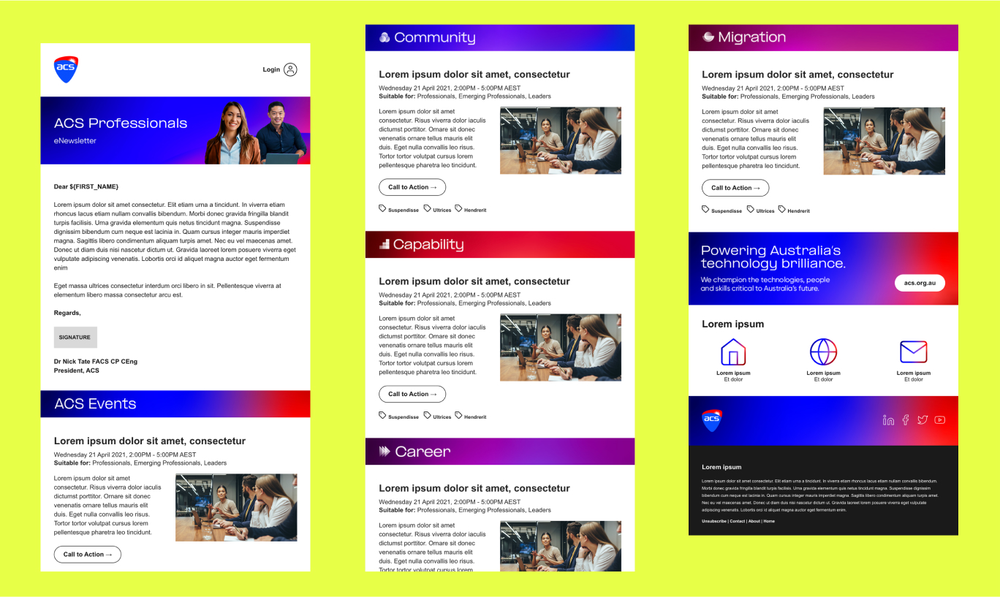

<!-- Modal 10-->
<div class="modal fade modal-xl" id="exampleModal14" tabindex="-1" aria-labelledby="exampleModalLabel" aria-hidden="true">
  <div class="modal-dialog">
    <div class="modal-content">
      <div class="modal-header">
        <button type="button" class="btn-close" data-bs-dismiss="modal" aria-label="Close"></button>
      </div>
      <div class="modal-body">

<div class=" row justify-content-center align-items-center" style="margin-bottom: 40px; margin-top: 40px;">
  <h2 class="text-center col-12 m-0 px-3 py-2" style="font-family:PPMonument; font-size: 48px; ">ACS</h2>
  <p class="text-center text-dark fs-6 fw-light font-family-Helvetica Neue col-12 m-0 px-3 py-2 pb-4">Email Campaign Design System</p>
<br> <p style="padding-left: 10%; padding-right: 10%;">
  With the rollout of their new brand ACS approached Pink Dog Studio to translate a basic email campaign template layout into a functional email newsletter design system that would allow the ACS to communicate its events with its members.<br><br>

  Working with ACS’s internal marketing team we reviewed the supplied design taking into consideration any and all functionality needed, how it would translate for mobile, brand implementation and light/dark mode variants. From this we got to work creating a design system made up of various components on which each email template would be built upon, once built these were brought into Adobe Campaign where they were setup and tested ensuring they worked well across all common hardware, email client and browser configurations commonly used by ACS members.
 </p>
  
  


      </div>
      <div class="modal-footer">

      </div>
    </div>
  </div>
</div>
